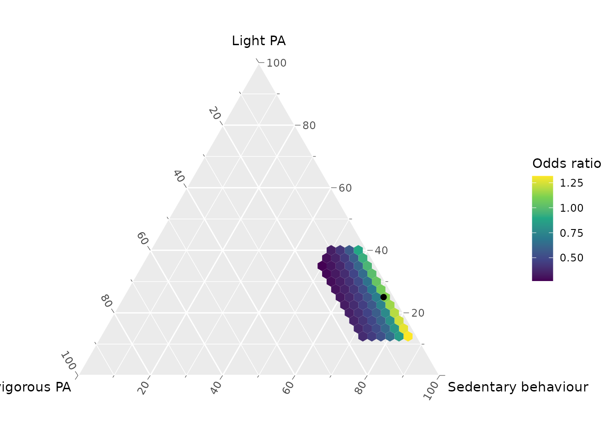
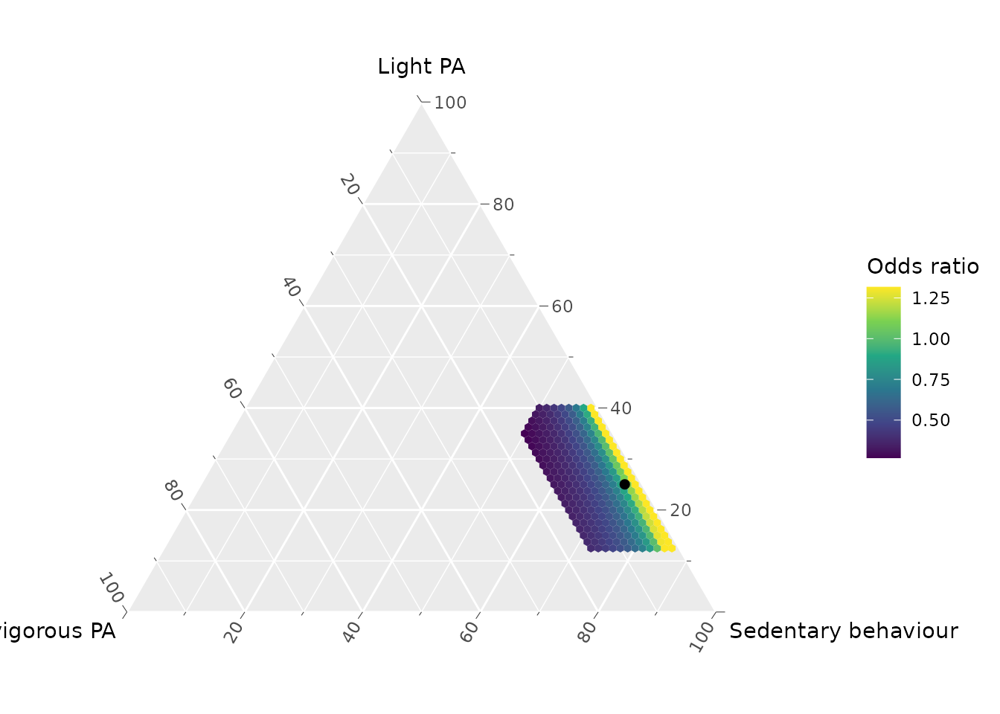
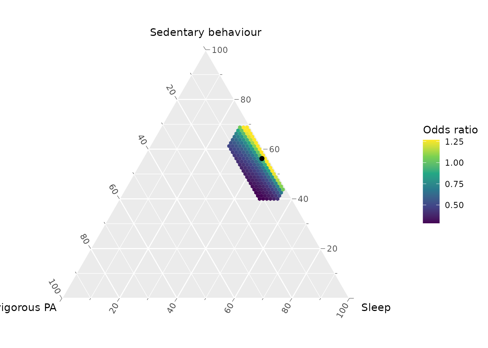

Modelling an outcome from a composition
Source:vignettes/composition-predictor.Rmd
composition-predictor.RmdThe example data
comp_iv() fits a model of an outcome on a time-use
composition, which enters as the independent variable. This vignette
describes what the function fits, how to read its summary and how to
check the fit.
The examples use the bundled timeuse data. For a
description of these data, see
vignette("composition-variable", package = "timecoda"). The
body-mass-index z-score (zbmi), the obesity indicator
(obesity) and sex (sex) are used beside the
four parts of the day.
cd <- declare_composition(
data = timeuse,
parts = c("MVPA", "LPA", "SB", "SPT"),
closure = 1440,
labels = c(
MVPA = "Moderate-to-vigorous PA",
LPA = "Light PA",
SB = "Sedentary behaviour",
SPT = "Sleep"
)
)Part 1. The composition as a predictor
Pivot coordinates and the per-part effect
Dumuid, Stanford, Martín-Fernández, et al. (2018) model an outcome on the isometric log-ratio (ILR) coordinates of a time-use composition with compositional multiple linear regression.
For pivot coordinates, see
vignette("composition-variable", package = "timecoda").
In a fit on one set of pivot coordinates, only the first coefficient
refers to a single part, and the remaining coefficients are contrasts
between groups of parts whose membership depends on the order in which
the parts were listed. Even the first coefficient represents a net
reallocation of time towards the first part from the remaining parts
together (Dumuid et al., 2020). Therefore, comp_iv()
reports one effect per part, each taken from a refit in which that part
is placed first. A separate quantity, the reallocation estimate, is the
expected change in the outcome when a stated number of minutes moves
between two named parts. For details, see
vignette("predicting-reallocations", package = "timecoda").
What comp_iv() does
A single call to comp_iv() performs four steps.
![Flowchart of the comp_iv() pipeline: a compD object and an outcome column enter; the composition is transformed to D minus 1 pivot ILR coordinates; the outcome is fitted on those coordinates and any covariates with the model engine named by model, with a family supplied for glm and glmer only; an omnibus Wald test on all coordinates together and one rotated refit per part, giving its part-versus-remaining effect and read by summary() only, follow side by side; the result is a comp_iv object read by summary(), fit_check() and the reallocation functions.](comp-iv-pipeline.svg)
The “Omnibus test” is a Wald test of the null hypothesis that all
D - 1 coordinate coefficients are zero (i.e., of no
association between the composition as a whole and the outcome). The
test statistic is referred to a chi-squared distribution on
D - 1 degrees of freedom. Because the statistic is the same
for every choice of pivot coordinates, the test does not depend on the
order of the parts.
Each refit is the same model in rotated coordinates and has the same fitted values.
A complete fit
fit_ob <- comp_iv(
comp = cd,
outcome = "obesity",
model = "glm",
family = "binomial",
covariates = "sex"
)Reading the summary
summary(object = fit_ob)
#> <comp_iv> compositional generalized linear model (binomial)
#> Parts: Moderate-to-vigorous PA, Light PA, Sedentary behaviour, Sleep (total = 1440)
#> Omnibus composition test (Wald): chi-squared(3) = 28.845, p = 2.41e-06
#> Convergence: OK
#>
#> Compositional effects (Odds ratio)
#> # A tibble: 5 × 6
#> parameter label estimate conf.low conf.high p.value
#> <chr> <chr> <dbl> <dbl> <dbl> <dbl>
#> 1 Global Composition Global Composition NA NA NA 2.41e-6
#> 2 MVPA vs remaining Moderate-to-vigorous PA 0.501 0.382 0.656 5.07e-7
#> 3 LPA vs remaining Light PA 0.981 0.504 1.91 9.54e-1
#> 4 SB vs remaining Sedentary behaviour 2.98 1.16 7.65 2.34e-2
#> 5 SPT vs remaining Sleep 0.684 0.273 1.71 4.16e-1The convergence line reports on the “Fit” step in the backend’s own
terms, and OK means that no warning was issued. When a fit
issues warnings, they are listed in place of this line.
The table comes from the “One refit per part” step and has one row
per part against the remaining parts. The
Global Composition row repeats the omnibus p-value and
holds NA in its effect columns, because the composition as
a whole has no single effect size. The 95% Wald confidence interval is
bounded by conf.low and conf.high, and the
per-part p-values are not adjusted for multiple comparisons.
The effect measure named above the table depends on the model and its
link. For a logistic regression, it is the odds ratio, the factor by
which the odds of the outcome are multiplied for a one-unit increase in
the part’s first pivot coordinate, and for a linear model it is a mean
difference, the change in the mean outcome for the same one-unit
increase. A one-unit increase corresponds to multiplying the ratio of
the part to the geometric mean of the other parts by
exp(sqrt(D / (D - 1))), about 3.17 for four parts. With an
odds ratio of 0.501, we read more moderate-to-vigorous activity relative
to the rest of the day as associated with lower odds of obesity, after
adjustment for sex.
Part 2. The steps in detail
Choosing the model
| Outcome type | Single-level model | Multilevel counterpart | Purpose and effect reported |
|---|---|---|---|
| Continuous | "lm" |
"lmer" |
mean difference in the outcome |
| Continuous, outlier-robust | "lmrob" |
"rlmer" |
mean difference, down-weighting outlying observations |
| Binary, count or rate (a GLM family) | "glm" |
"glmer" |
odds ratio (logit link); rate, risk or mean ratio (log link) |
| Time to event | "cox" |
"coxme" |
hazard ratio; relative reallocations only |
| Ordinal | "clm" |
"clmm" |
cumulative odds ratio; relative only |
| Unordered categories | "mblogit" |
"mblogit" with random
|
one relative-risk ratio per category; relative only |
Here, you fit the single-level engines of the first and third rows,
"lm" and "glm". For the remaining engines, see
the help page that ?comp_iv opens and
vignette("advanced-models", package = "timecoda").
fit_bmi <- comp_iv(comp = cd, outcome = "zbmi", model = "lm")
summary(object = fit_bmi)
#> <comp_iv> compositional linear model
#> Parts: Moderate-to-vigorous PA, Light PA, Sedentary behaviour, Sleep (total = 1440)
#> Omnibus composition test (Wald): chi-squared(3) = 291.105, p = <2e-16
#>
#> Compositional effects (Mean difference)
#> # A tibble: 5 × 6
#> parameter label estimate conf.low conf.high p.value
#> <chr> <chr> <dbl> <dbl> <dbl> <dbl>
#> 1 Global Composition Global Composition NA NA NA 8.37e-63
#> 2 MVPA vs remaining Moderate-to-vigorous … -0.708 -0.807 -0.609 6.94e-35
#> 3 LPA vs remaining Light PA -0.202 -0.456 0.0525 1.19e- 1
#> 4 SB vs remaining Sedentary behaviour 1.72 1.37 2.07 9.58e-20
#> 5 SPT vs remaining Sleep -0.810 -1.16 -0.462 6.68e- 6On the mean-difference scale, a one-unit increase in the pivot coordinate for moderate-to-vigorous activity is associated with a mean z-BMI 0.708 lower.
For a linear model, the Wald statistic equals D - 1
times the F statistic for the same hypothesis, but the chi-squared
distribution it is referred to ignores the uncertainty in the residual
variance. Therefore, in small samples, its p-value is slightly smaller
than that of the exact F test.
You can give a family by name, as "binomial" above, or
as a family object such as binomial(link = "log"), and its
link sets the effect measure.
| Link | Effect measure |
|---|---|
"logit" (the default for binomial) |
odds ratio |
"log" (the default for poisson) |
rate ratio for a Poisson family, risk ratio for a binomial family, ratio of means otherwise |
"identity" (the default for gaussian) |
mean difference |
Covariates
To adjust for other variables, you name their columns in the declared
data with covariates. The logistic fit fit_ob
was adjusted for sex. To see what the argument changes, refit it without
adjustment.
fit_ob_unadj <- comp_iv(comp = cd, outcome = "obesity", model = "glm",
family = "binomial")
summary(object = fit_ob_unadj)
#> <comp_iv> compositional generalized linear model (binomial)
#> Parts: Moderate-to-vigorous PA, Light PA, Sedentary behaviour, Sleep (total = 1440)
#> Omnibus composition test (Wald): chi-squared(3) = 28.922, p = 2.33e-06
#> Convergence: OK
#>
#> Compositional effects (Odds ratio)
#> # A tibble: 5 × 6
#> parameter label estimate conf.low conf.high p.value
#> <chr> <chr> <dbl> <dbl> <dbl> <dbl>
#> 1 Global Composition Global Composition NA NA NA 2.33e-6
#> 2 MVPA vs remaining Moderate-to-vigorous PA 0.501 0.382 0.656 4.89e-7
#> 3 LPA vs remaining Light PA 0.982 0.506 1.91 9.58e-1
#> 4 SB vs remaining Sedentary behaviour 2.98 1.16 7.65 2.34e-2
#> 5 SPT vs remaining Sleep 0.683 0.273 1.71 4.15e-1Because each covariate enters the model as a main effect, the
association between the composition and the outcome is the same at every
covariate value. When a model includes interactions between the
composition and a covariate, reallocation estimates depend on the
covariate’s value. To learn how to supply that value, see the section on
covariates in
vignette("predicting-reallocations", package = "timecoda").
For a composition whose row totals vary between people, the total itself
can enter as a covariate through include_total = TRUE. For
that option, see the section on the total as a covariate in
vignette("advanced-models", package = "timecoda").
Backend arguments
To pass other arguments to the underlying fitting function, use
model_args. These are arguments that comp_iv()
does not expose itself (e.g., observation weights or a control object
for the fitting algorithm). For details, see ?comp_iv.
Confidence level
To set the coverage of the per-part confidence intervals, use
conf_level, an argument of summary(). The
fitted model is reused unchanged.
summary(object = fit_ob, conf_level = 0.90)
#> <comp_iv> compositional generalized linear model (binomial)
#> Parts: Moderate-to-vigorous PA, Light PA, Sedentary behaviour, Sleep (total = 1440)
#> Omnibus composition test (Wald): chi-squared(3) = 28.845, p = 2.41e-06
#> Convergence: OK
#>
#> Compositional effects (Odds ratio)
#> # A tibble: 5 × 6
#> parameter label estimate conf.low conf.high p.value
#> <chr> <chr> <dbl> <dbl> <dbl> <dbl>
#> 1 Global Composition Global Composition NA NA NA 2.41e-6
#> 2 MVPA vs remaining Moderate-to-vigorous PA 0.501 0.399 0.628 5.07e-7
#> 3 LPA vs remaining Light PA 0.981 0.561 1.71 9.54e-1
#> 4 SB vs remaining Sedentary behaviour 2.98 1.35 6.57 2.34e-2
#> 5 SPT vs remaining Sleep 0.684 0.317 1.48 4.16e-1Part 3. Checking the fit
fit_check() runs residual diagnostics suited to the
model class. For lm and glm fits, it uses the
DHARMa package (Hartig, 2026), which simulates new outcomes from the
fitted model and records where each observed value falls among its
simulated values. When the model is correctly specified, these simulated
quantile residuals follow a uniform distribution between 0 and 1, for a
binary outcome as for a continuous one (Dunn & Smyth, 1996). DHARMa
is a suggested package, and you must install it before using
fit_check() on these fits.
By default, DHARMa fixes its own random seed, so the output is
reproducible without set.seed(). To use a different seed,
pass it to fit_check() as its seed
argument.
fit_check(object = fit_ob)
#> <fit_check> generalized linear model
#> Backend: dharma
#> Convergence: converged (0 backend warnings)
#>
#> # A tibble: 3 × 4
#> check statistic df p.value
#> <chr> <dbl> <dbl> <dbl>
#> 1 KS uniformity 0.0354 NA 0.847
#> 2 Dispersion 1.01 NA 0.992
#> 3 Outliers 0 NA 1- The KS uniformity row is the Kolmogorov-Smirnov statistic comparing the residuals with the uniform distribution, and a small p-value is evidence that the observed outcomes are not distributed as the fitted model implies.
- The Dispersion row is the ratio of the observed residual variation to the variation among the simulations, which is close to 1 when the two agree, and a small p-value is evidence of more or less variation in the outcome than the model implies.
- The Outliers row counts the observations lying outside the range of every simulated value, and a small p-value is evidence of more such observations than chance would produce.
In the right panel, each residual is plotted against the model’s prediction, rank-transformed to lie between 0 and 1. The dashed lines mark 0.25, 0.5 and 0.75, and the solid curves are the residual quantiles at those levels, estimated across the range of predictions. Curves far from their dashed lines are evidence of a systematic departure, and the result of that comparison is stated in the panel’s title. The linear fit is checked in the same way.
fit_check(object = fit_bmi)
#> <fit_check> linear model
#> Backend: dharma
#>
#> # A tibble: 3 × 4
#> check statistic df p.value
#> <chr> <dbl> <dbl> <dbl>
#> 1 KS uniformity 0.0333 NA 0.893
#> 2 Dispersion 0.987 NA 0.888
#> 3 Outliers 1 NA 0.738The one observation outside the simulated range is marked by a star in the right-hand panel. In the test of the Outliers row, we find no evidence of more such observations than chance would produce (p = 0.738). At the console, this call can also print a warning from the mgcv package, which DHARMa uses to estimate the quantile curves in the right-hand panel. The warning concerns those curves and the panel’s title, and the tests in the report are computed without them.
Part 4. Publication table
summary() returns its tables at full numeric precision.
To turn them into a formatted table, use pub_ready(), which
uses the suggested package gt.
| Compositional effects | |||
| Each part versus the remaining composition | |||
| Analysis Component | Odds ratio | 95% CI | p-value |
|---|---|---|---|
| Global Composition | - | - | <0.001 |
| Moderate-to-vigorous PA vs remaining | 0.50 | [0.38, 0.66] | <0.001 |
| Light PA vs remaining | 0.98 | [0.50, 1.91] | 0.9540 |
| Sedentary behaviour vs remaining | 2.98 | [1.16, 7.65] | 0.0234 |
| Sleep vs remaining | 0.68 | [0.27, 1.71] | 0.4159 |
Effects and interval bounds are rounded to digits
decimal places, two by default, and p-values below 0.001 are shown as
<0.001.
pub_ready() returns a list of tables, and at the console
the bare call pub_ready(x = summary(object = fit_ob))
displays every table it builds.
Part 5. Seeing the fitted surface
plot() draws what the model predicts across the
composition, with one ternary panel for each group of three parts. The
fourth part is held at its value in the reference composition, which is
marked by a black point. The model is evaluated at a grid of
compositions, each contrasted with the reference composition as an odds
ratio, the same contrast that predict_realloc() reports in
a table. By default, each computed composition is drawn as one hexagonal
tile filled with its own odds ratio, and nothing is interpolated between
the tiles.
For the reference composition, see
vignette("predicting-reallocations", package = "timecoda").
p_ob <- plot(x = fit_ob)


The surface is drawn only where the sample has data (i.e., where each
of the three parts lies between its 5th and 95th percentile in the
observed compositions). The blank corners lie outside that band. To
colour the whole triangle, set quantiles = NULL. In the
three panels that contain moderate-to-vigorous activity, the odds ratio
is lowest where that activity is highest, down to 0.27 at the computed
compositions, and it rises towards the low-activity edge of the
band.
With smooth = TRUE, plot() fits a quadratic
surface through the computed values on the log scale of the odds ratio
and draws it on a finer lattice, on which the colour changes smoothly
across the band. Either way, the panels’ data and the numbers quoted
from them come from the same grid.
plot(x = fit_ob, smooth = TRUE)



References
Dumuid, D., Stanford, T. E., Martín-Fernández, J. A., Pedišić, Ž., Maher, C. A., Lewis, L. K., Hron, K., Katzmarzyk, P. T., Chaput, J. P., Fogelholm, M., Hu, G., Lambert, E. V., Maia, J., Sarmiento, O. L., Standage, M., Barreira, T. V., Broyles, S. T., Tudor-Locke, C., Tremblay, M. S., & Olds, T. (2018). Compositional data analysis for physical activity, sedentary time and sleep research. Statistical Methods in Medical Research, 27, 3726-3738.
Dumuid, D., Pedišić, Ž., Palarea-Albaladejo, J., Martín-Fernández, J. A., Hron, K., & Olds, T. (2020). Compositional data analysis in time-use epidemiology: What, why, how. International Journal of Environmental Research and Public Health, 17, 2220.
Dunn, P. K., & Smyth, G. K. (1996). Randomized quantile residuals. Journal of Computational and Graphical Statistics, 5, 236-244.
Hartig, F. (2026). DHARMa: Residual diagnostics for hierarchical (multi-level / mixed) regression models. R package version 0.5.0.
See also
-
vignette("composition-variable", package = "timecoda"): declaring and describing the composition thatcomp_iv()takes as input. -
vignette("predicting-reallocations", package = "timecoda"): estimating the change in the outcome when time moves between two parts, from acomp_iv()fit. -
vignette("advanced-models", package = "timecoda"): the other model engines, the formula interface, moderation and the total as a covariate. -
vignette("timecoda", package = "timecoda"): the whole workflow in one analysis.